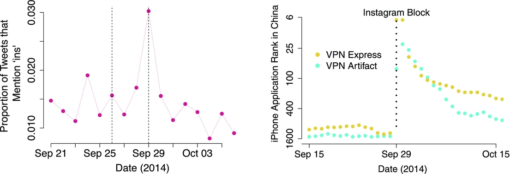
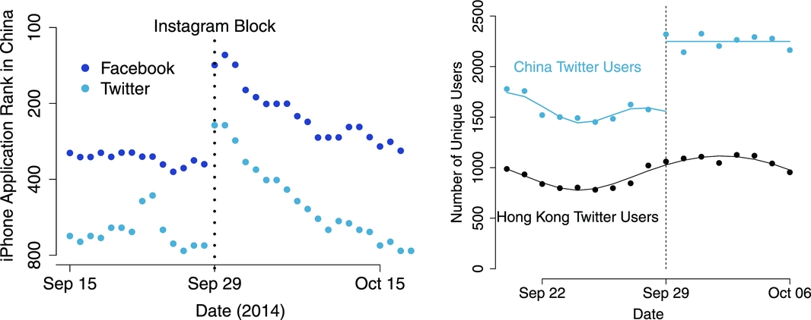
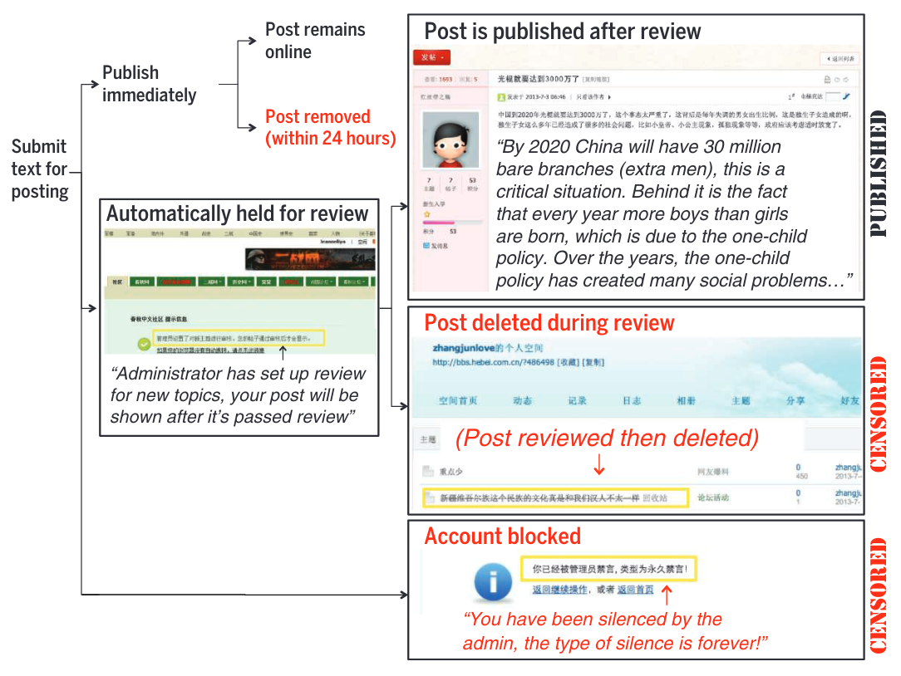
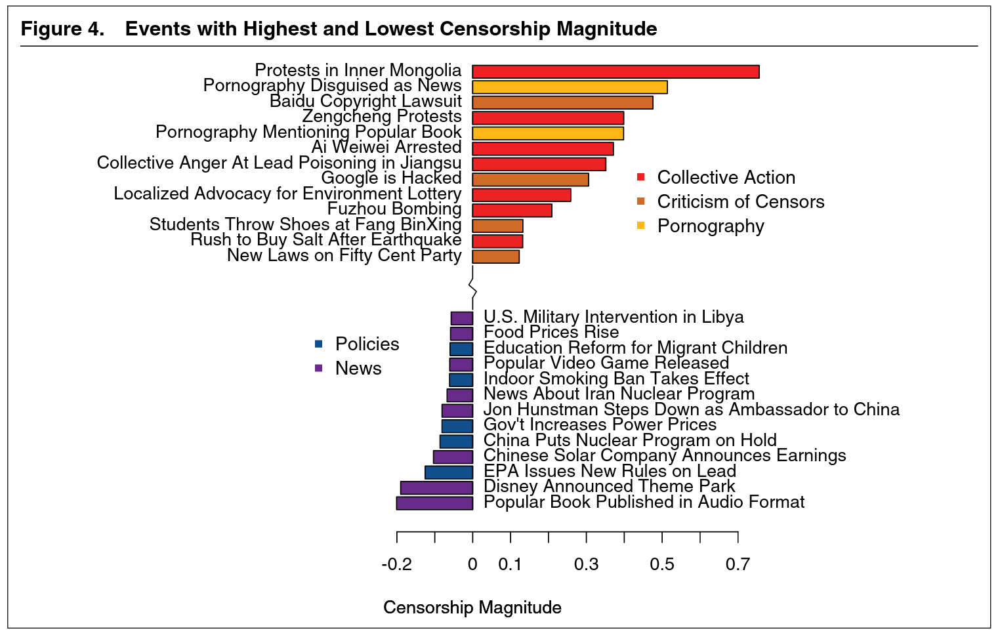
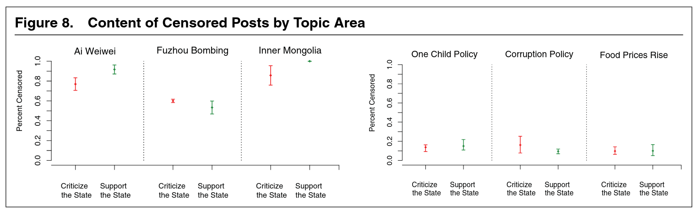
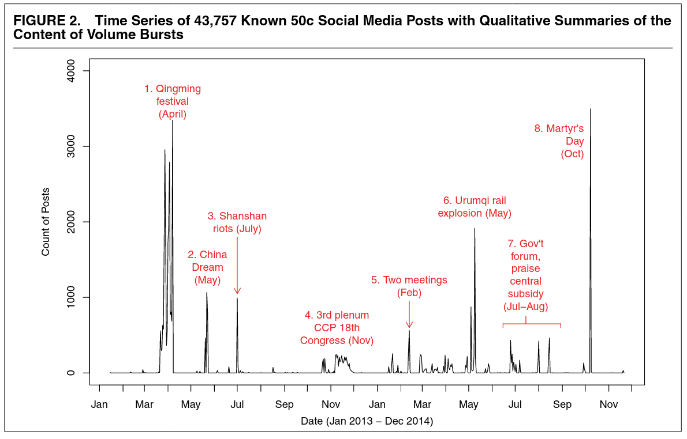
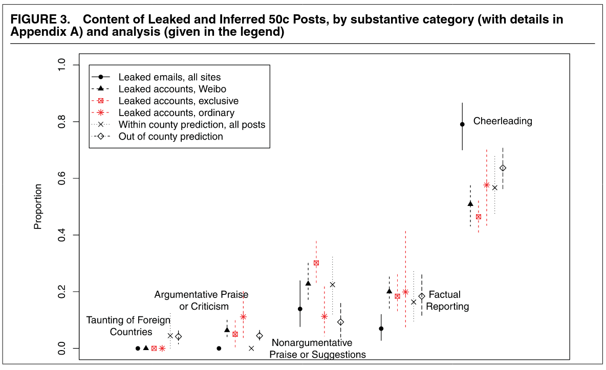

おまけ
政治学入門
政治や政治学に関して、土井が面白いと思ったトピックを紹介するかもしれません（しないかもしれません）。
1 中国のネット検閲
1.1 人々は検閲を嫌っているのか？



1.2 政府は何を検閲しているのか？





2 選挙
2.1 若者と投票
ライカー＝オードシュック・モデル
\[ R = P \times B - C + D \]

若者の投票\(\leadsto\)教育予算(Bertocchi ほか 2020)

2.2 選挙と民意
社会的選択理論 (social choice theory)(坂井 2015, 2016)
政策の好みと政党の好み
5人の有権者がいて、A党とB党の3つの政策について、次のように好んでいる。
| 有権者 | 金融 | 外交 | 原発 | 支持政党 |
|---|---|---|---|---|
| 1 | A | A | B | A |
| 2 | A | B | A | A |
| 3 | B | A | A | A |
| 4 | B | B | B | B |
| 5 | B | B | B | B |
| 多数決の結果 | B | B | B | A |
選び方によって結果は変わるかもしれない。
選び方と政策
9人の有権者がいて、4人の候補者（政策）について、次のように好んでいる。
| 人数 | 4人 | 3人 | 2人 |
|---|---|---|---|
| 1位 | A | C | D |
| 2位 | B | B | B |
| 3位 | C | A | C |
| 4位 | D | D | A |
- 多数決
- Aが最多の4人の支持を得る
- 決選投票
- 1回目で2票しか得なかったDが落選
- 決選投票ではCが5人の支持を得る1
- ボルダルール：1位に4点、2位に3点、3位に2点、4位に1点を与える
- Aは24点、Bは27点、Cは24点、Dは15点
政策で投票先を選んでいるのか？
- 堀内優作ほか「衆院総選挙、緊急解析！ データが明かした有権者の本音」日経ビジネス
- 堀内優作「マニフェスト選挙を疑え：2021年総選挙の計量政治学」日経ビジネス


参考文献
Bertocchi, Graziella, Arcangelo Dimico, Francesco Lancia, と Alessia Russo. 2020. 「Youth enfranchisement, political responsiveness, and education expenditure: Evidence from the US」. American Economic Journal: Economic Policy 12 (3): 76–106.
Chen, Yuyu, と David Y Yang. 2019. 「The impact of media censorship: 1984 or brave new world?」 American Economic Review 109 (6): 2294–2332.
Hobbs, William R, と Margaret E Roberts. 2018. 「How sudden censorship can increase access to information」. American Political Science Review 112 (3): 621–36.
King, Gary, Jennifer Pan, と Margaret E Roberts. 2013. 「How censorship in China allows government criticism but silences collective expression」. American political science Review 107 (2): 326–43.
———. 2014. 「Reverse-engineering censorship in China: Randomized experimentation and participant observation」. Science 345 (6199): 1251722.
———. 2017. 「How the Chinese government fabricates social media posts for strategic distraction, not engaged argument」. American political science review 111 (3): 484–501.
坂井豊貴. 2015. 多数決を疑う : 社会的選択理論とは何か. 岩波新書. 岩波書店.
———. 2016. 「決め方」の経済学 : 「みんなの意見のまとめ方」を科学する. ダイヤモンド社.
脚注
多数決の場合は票割れが起こってしまっている。↩︎